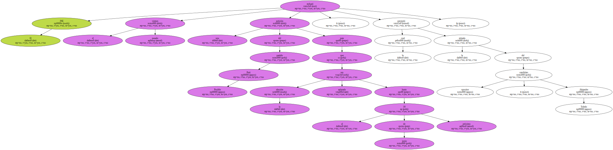
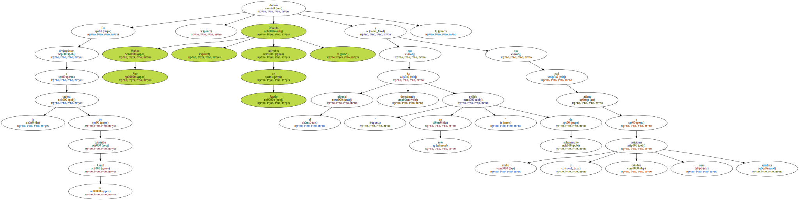
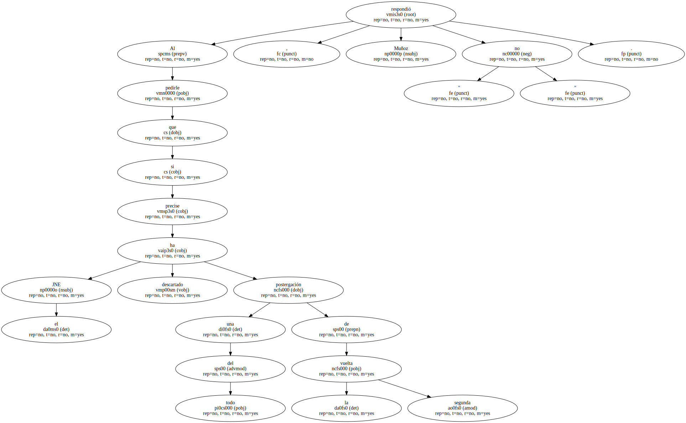
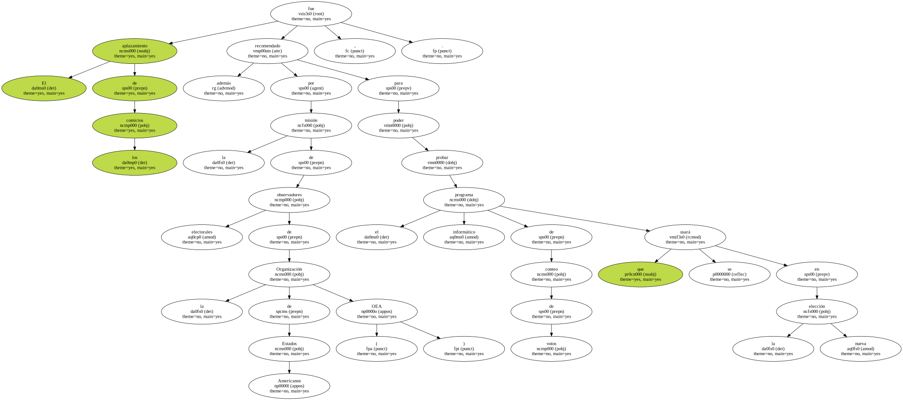
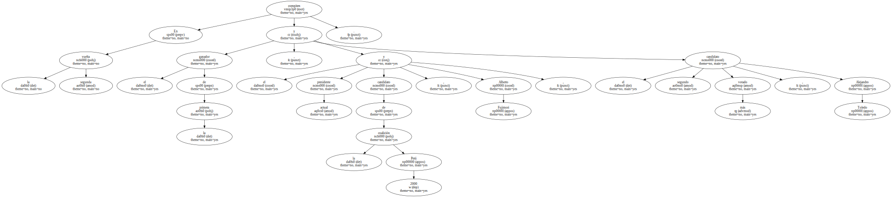
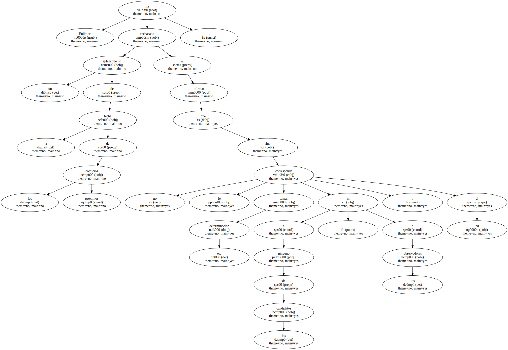

Un portavoz del Jurado Nacional de Elecciones de Perú ( JNE ) informó hoy de que ese tribunal no ha descartado del todo la posibilidad de postergar la segunda vuelta electoral del próximo día 28.

El JNE rechazó el pasado viernes una petición del partido Perú Posible para que la elección sea aplazada hasta el 18 de junio próximo , lo cual precipitó la retirada del candidato opositor , Alejandro Toledo.
En declaraciones a la cadena de televisión Canal N , Rómulo Muñoz Arce , miembro del Jurado , declaró que el tribunal ha desestimado " solo un pedido " de aplazamiento y que está abierto a recibir y estudiar otras peticiones similares.
Al pedirle que precise si el JNE ha descartado del todo una postergación de la segunda vuelta , Muñoz respondió " no ".
El aplazamiento de los comicios fue recomendado además por la misión de observadores electorales de la Organización de Estados Americanos ( OEA ) , para poder probar el programa informático de conteo de votos que se usará en la nueva elección.
En la segunda vuelta compiten el ganador de la primera , el actual presidente y candidato de la coalición Perú 2000 , Alberto Fujimori , y el segundo candidato más votado , Alejandro Toledo.
Fujimori ha rechazado un aplazamiento de la fecha de los próximos comicios al afirmar que no le corresponde tomar esa determinación a ninguno de los candidatos , ni a los observadores , sino al JNE.
